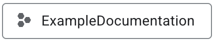
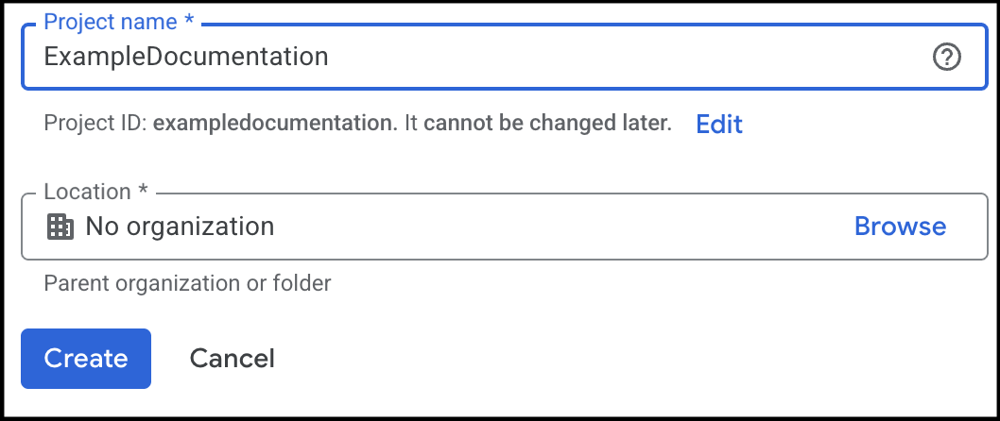
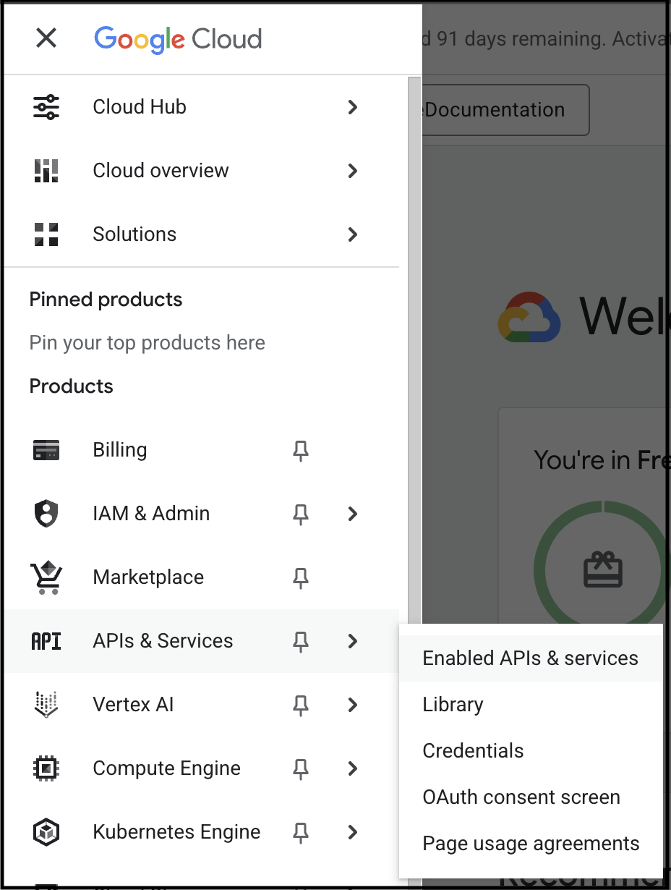
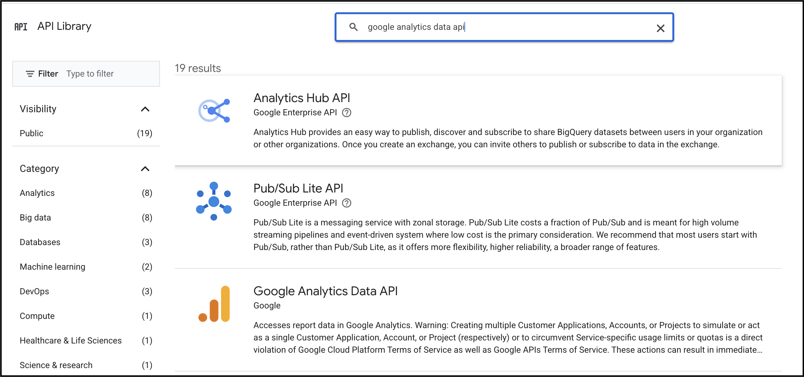
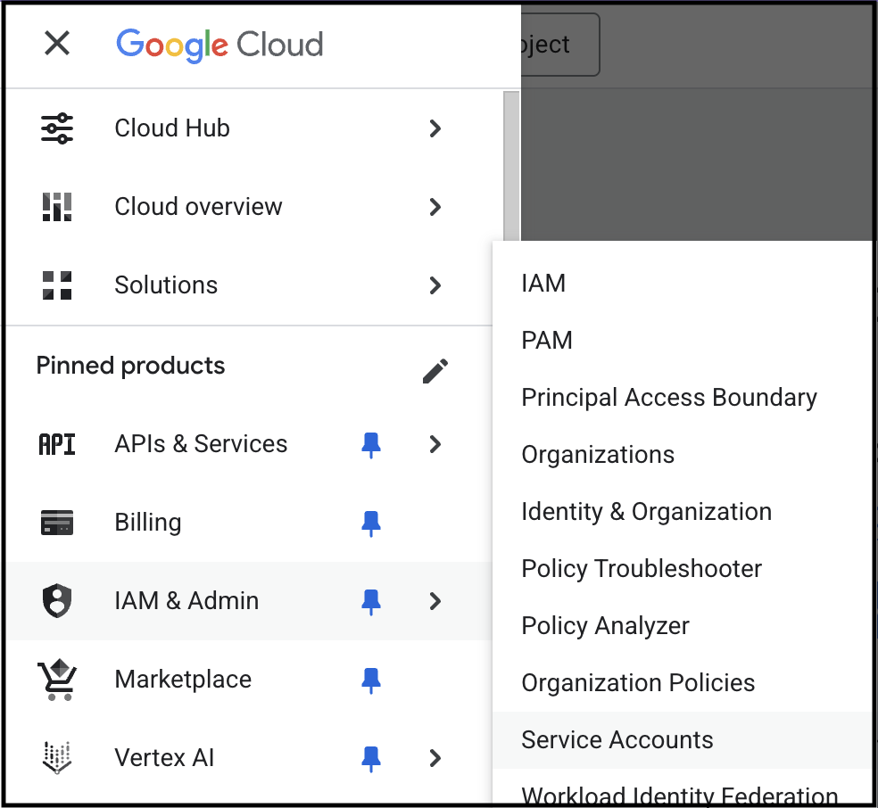
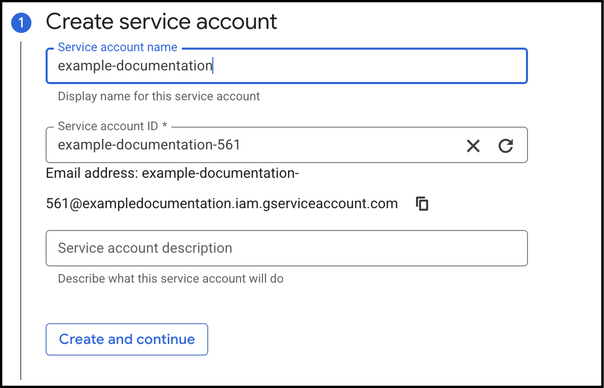
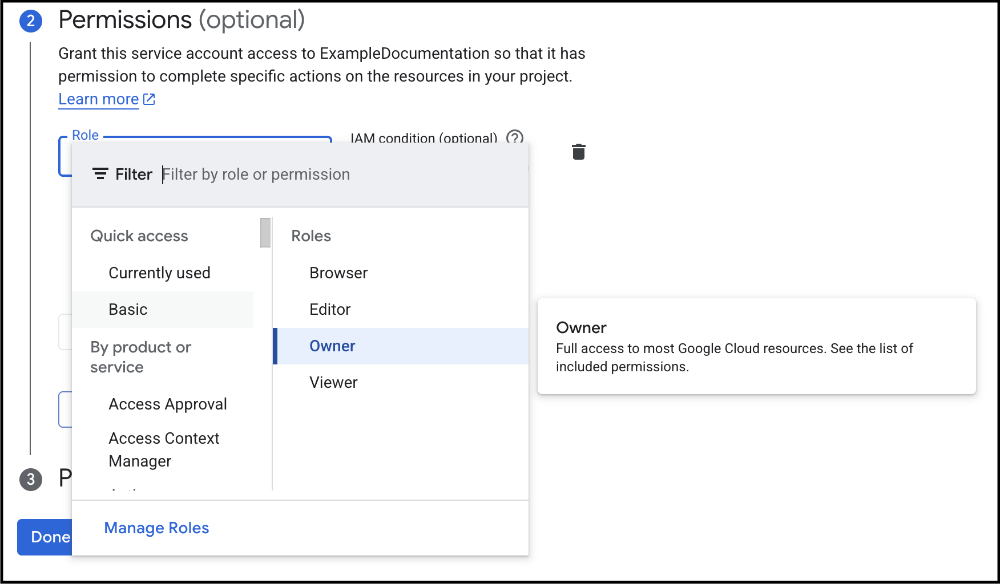
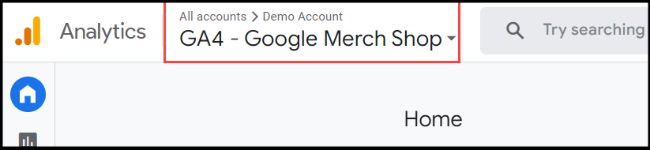
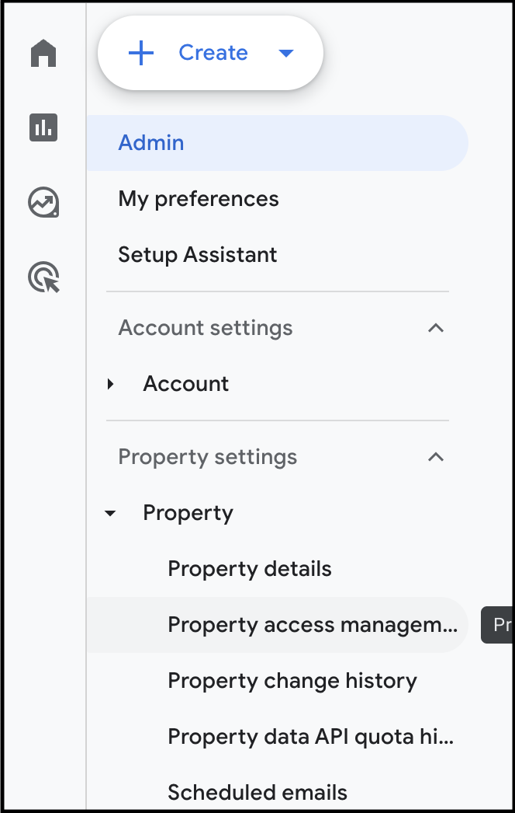

Enable Programmatic Access to Google Analytics Data
The Google Analytics Data API allows you to programmatically access your Google Analytics data. This can be useful if you want to do things like; automate data extraction, integrate analytics data into your applications, or perform advanced data analysis.
This guide describes how to set up a Google Cloud project with the appropriate credentials, to enable fetching data using the Google Analytics Data API.
Prerequisites
- A Google Cloud account.
- A Google Analytics property to set up access to.
- gcloud command line tool installed. See the gcloud installation guide for instructions.
Step 1: Create Google Cloud Project
To create a Google Cloud project:
-
Open the Google Cloud Console.
-
Select the Open Project Picker button () in the top left corner.
-
Select the New Project button.

-
Enter the following information:
- Project name
- If applicable, your Organization.
-
If applicable, a Location.

-
Select Create, to create the project.
Note
If you have several Google accounts, make sure you are logged in with the account that you want to connect the project to.
Step 2: Enable Google Analytics Data API
To enable the Google Analytics Data API for your project:
-
The new Google Cloud project is not automatically opened in the Console. To open the project, select the Open Project Picker button () in the top left corner and select the project.
-
Select the hamburger menu in the top left corner and select APIs & Services > Enable APIs & Services.

-
Select the + Enable APIs and Services button.
-
Enter Google Analytics Data API in the search bar and press Enter.

-
Select Google Analytics Data API.
-
Select the Enable button, to enable the API for your project.
Step 3: Create Service Account and Keys
API credentials are required to authenticate your requests. To create a service account and generate a key:
-
Select the hamburger menu in the top left corner and select IAM & Admin > Service Accounts.

-
Select the + Create Service Account button.
-
In the Create service account field, fill in fields:
- Service account name
- Service account ID (generated automatically)
- Service account description.

-
Select Create and continue.
-
Set Permissions to Owner.

-
Do not set any Principals with access.
-
Select Done to create the service account.
-
Select the newly created service account.
For example: example-documentation@exampledocumentation.iam.gserviceaccount.com.
-
Select Add key > Create new key and select JSON. A JSON file with the key is downloaded to your computer.
Warning
Make sure that you store the key safely. This key provides access to all Google Analytics properties that you have granted.
Step 4: Grant Access to the Service Account
For the service account to access your Google Analytics data, you need to grant access to the Google Analytics property.
To grant access to the service account:
-
Open Google Analytics.
-
Open the Google Analytics property that you want to connect to. Select the name of the property in the top right of Google Analytics. In the following image, the property is called GA4 - Google Merch Shop.

-
Select Admin in the bottom left corner.
-
In the Property column, select Property Access Management.

-
Select the + button to add a new user.
-
Enter the service account, in this example example-documentation@exampledocumentation.iam.gserviceaccount.com, and then select Add.
Note
You can share this email account with business partners and other users that you want to have access to your analytics data. There are no secrets or keys included in the email address.
Step 5: Validation
You should now be able to access data by calling the Google Analytics Data API. To validate this, we will query the number of active users in the last 7 days by calling the runReport endpoint using curl.
The runReport endpoint is used to fetch analytics data, like user counts, sessions, countries, and events for a Google Analytics property. This guide does not cover the full details of how to use the Google Analytics Data API. For full information on the endpoints request and response structure, see the runReport documentation. For instructions on how to work with the Google Analytics Data API, see the Google Analytics Data API documentation.
To call runReport using curl:
-
Create an access token using gcloud and the JSON service account key file you downloaded in Create Service Account and Keys.
Execute the commands below in your terminal. Replace
your-service-account-key.jsonwith the path to your service account key file.gcloud auth activate-service-account --key-file=your-service-account-key.json gcloud auth print-access-tokenThe token to be used in the
Authorization: Bearer <YOUR_ACCESS_TOKEN>header is printed. -
Get your Google Analytics Property ID. You can find it in the Google Analytics Admin section under Property Settings. It has the following format: G-XXXXXXXXXX.
-
Use the below curl command to make the call. Replace
YOUR_PROPERTY_IDwith your Google Analytics property ID, andYOUR_ACCESS_TOKENwith the access token you have created.In the above example fieldscurl -X POST \ "https://analyticsdata.googleapis.com/v1beta/properties/YOUR_PROPERTY_ID:runReport" \ -H "Authorization: Bearer $YOUR_ACCESS_TOKEN" \ -H "Content-Type: application/json" \ -d '{ "dimensions": [{"name": "date"}, {"name": "country"}], "metrics": [{"name": "activeUsers"}], "dateRanges": [{"startDate": "7daysAgo", "endDate": "today"}] }'dimensions,metrics, anddateRangesare used to specify the data to retrieve. The dimensions aredateandcountry, the metric isactiveUsers, and the date range is set to the last 7 days.More fields can be added to the request, see the
runReportdocumentation for more information. -
Validate the response:
-
If successful, you should receive an output similar to what is shown below. For more information on the response structure of
runReportsee the RunReportResponse documentation.{ "dimensionHeaders": [ {"name": "date"}, {"name": "country"} ], "metricHeaders": [ {"name": "activeUsers", "type": "TYPE_INTEGER"} ], "rows": [ { "dimensionValues": [{"value": "20250717"}, {"value": "United States"}], "metricValues": [{"value": "1234"}] }, ... ] } -
If unsuccessful, you will receive an error message. Common errors include:
insufficientPermissions: This means that the service account does not have access to the Google Analytics property. Make sure you have granted access to the service account in Create Service Account and Keys.invalidParameter: This means that there is an issue with the request parameters. Check that you have provided the correct property ID and that the request body is correctly formatted.
-